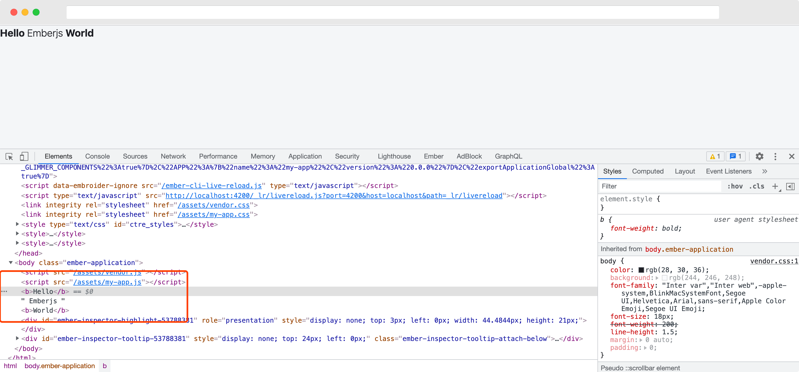

认识 Component
Component 是 emberjs 中的重要概念，emberjs 的 Component 和 vuejs 以及 reactjs 等 ui-component 概念大同小异，并无本质差别，都是具有独立逻辑且可复用的 UI 单元。
定义 Component
在 ember 使用 ember generate 命令可以快速定义一种类型，简写为 ember g，生成一个组件如下：
% ember g component hello
installing component
create app/components/hello.hbs
skip app/components/hello.js
tip to add a class, run `ember generate component-class hello`
installing component-test
create tests/integration/components/hello-test.js
% ember g component world
installing component
create app/components/world.hbs
skip app/components/world.js
tip to add a class, run `ember generate component-class world`
installing component-test
create tests/integration/components/world-test.js
上面的命令会生成两个 hbs 文件：
% tree app/components
app/components
├── hello.hbs
└── world.hbs
文件的内容是：
{{yield}}
我们将其中的内容分别改为：
hello.hbs
<h3>Hello</h3>
world.hbs
<h3>world</h3>
使用 Component
打开编辑器，在 application.hbs 中使用上面的组件
<Hello/> Emberjs <World/>

可以看到组件的使用就如同普通的 html tag 一样，ember 约定 ember 定义的组件是以 <> 的形式使用，支持 self closing 形式 </>，组件名称风格是 Pascal 命名法，但是组件的文件名称中如果包含多个单词，则采用连字符 -比如，组件 <HelloWorld/> 对应的文件名称是：
app/components
├── hello-world.hbs